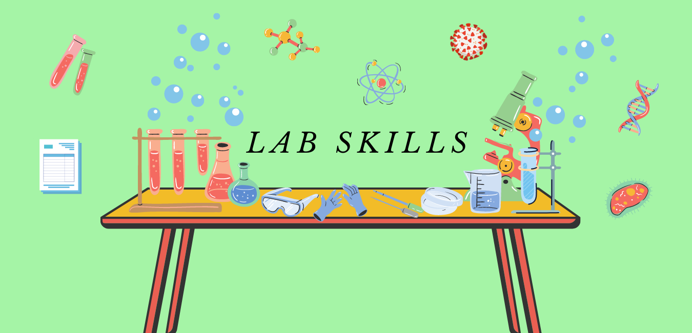
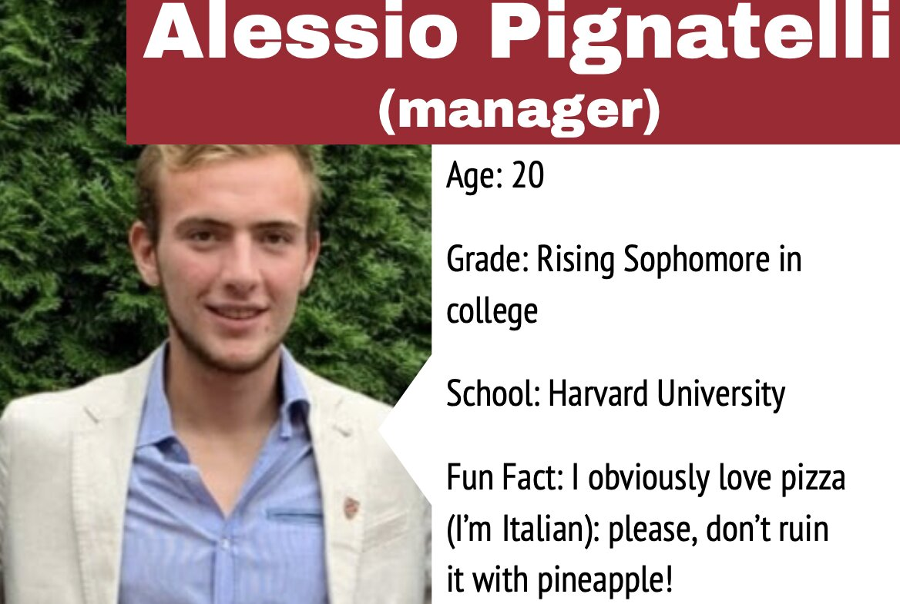
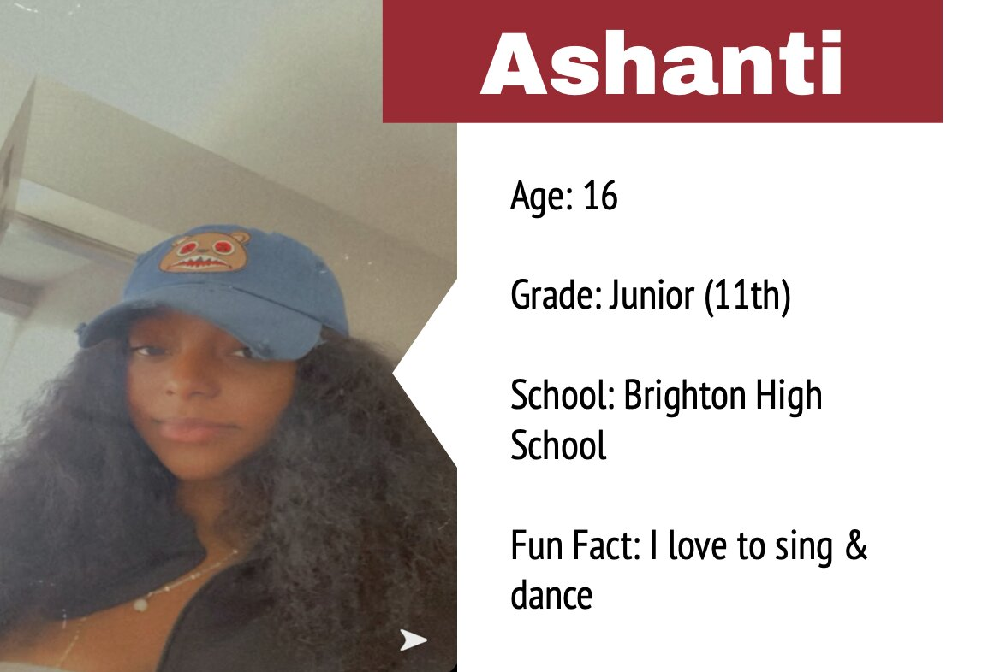
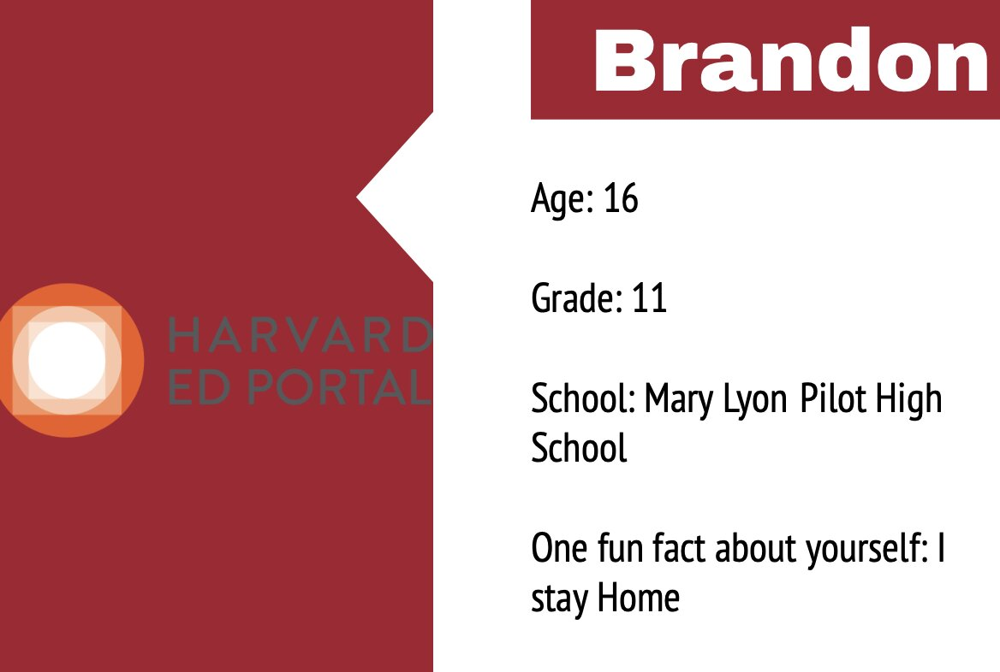
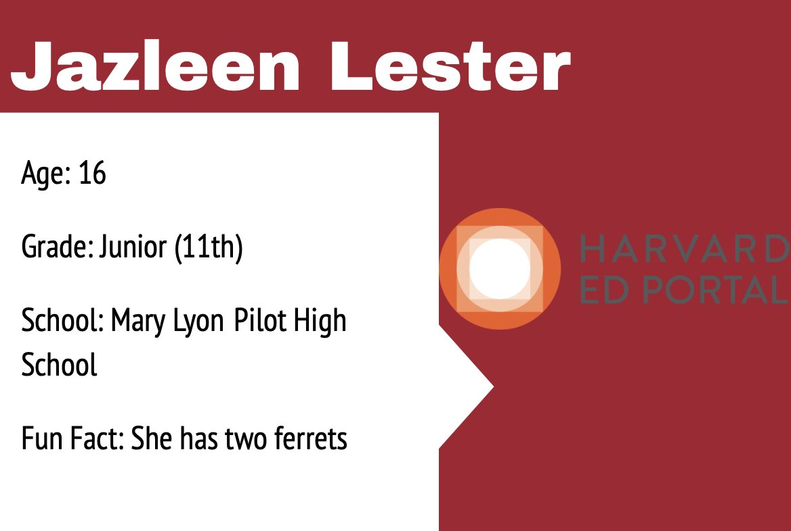
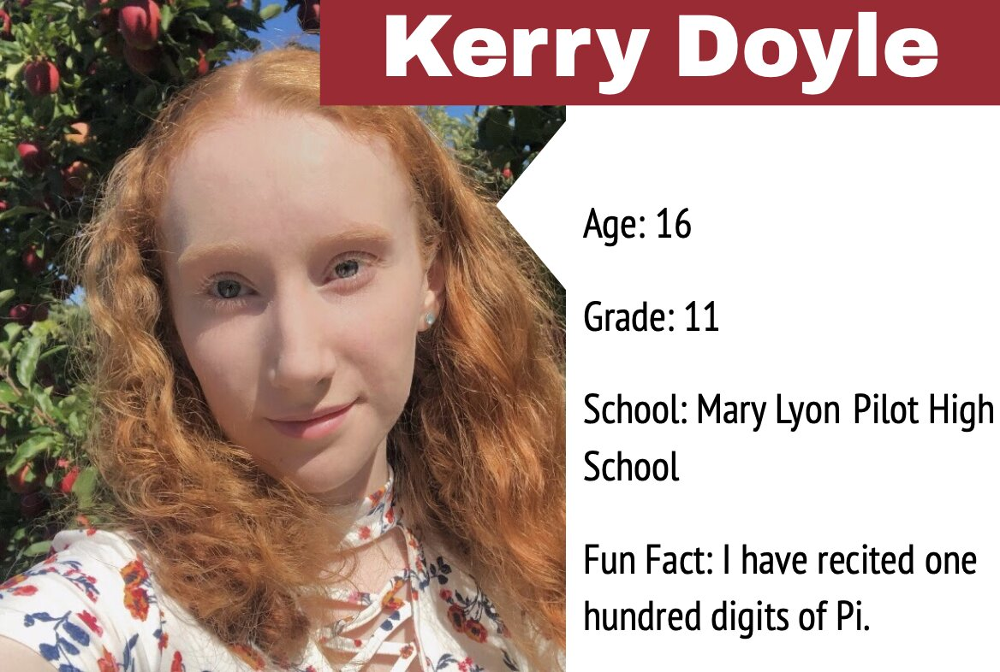
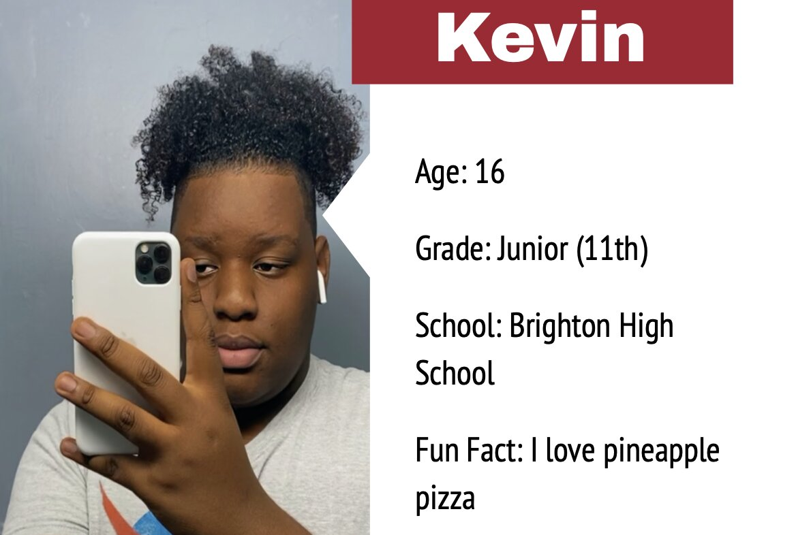
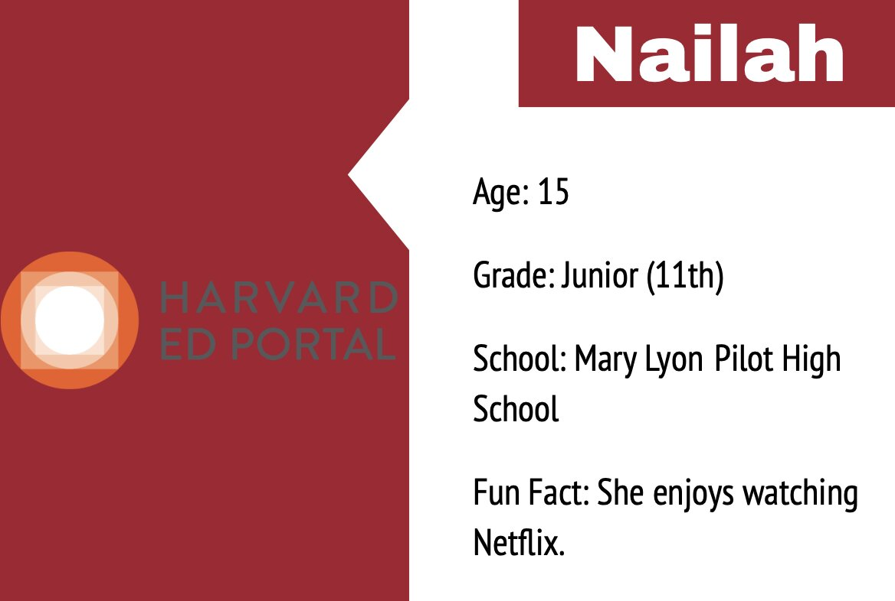

Harvard Ed Portal Summer Intern Program

introduction to lab skills
what are lab skills?
Lab skills are the skills used in a laboratory as a research student/professional researcher. This would require researching, analyzing, communicating and careful observation. As for the lab skills cohort, the interns focused on research and communication aspect of lab skills, focusing on COVID-19.
what does the lab skills cohort do?
By researching on the current issue of COVID-19, the interns of the lab skills cohort will give 3 brief presentations to youth in the Boston and Cambridge areas through videos, informing them with valuable information about viruses and vaccines. As the pandemic is still happening, it is important for youth to understand about viruses and vaccines during this time.
LAB SKILLS TEAM
Meet the lab skills team!






